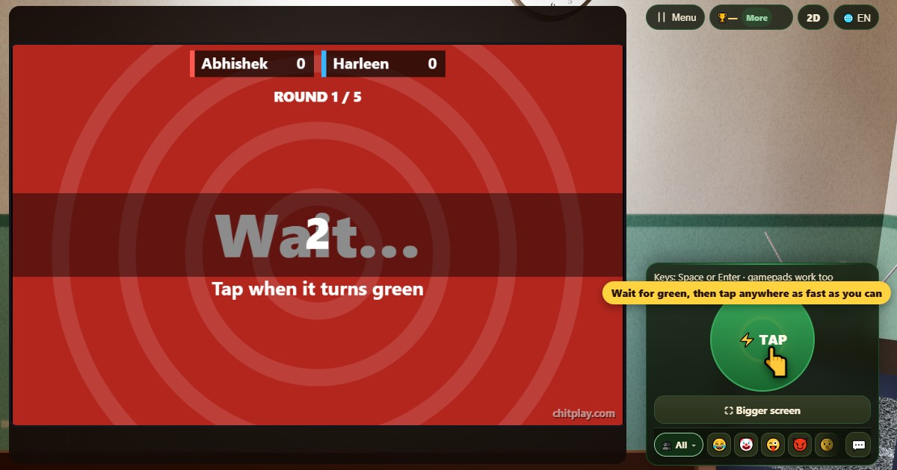

反応速度テスト (Reaction Time)
- 👥 1–4 人
- アーケードゲーム（3Dのテレビで）
- 🆓
日本語ガイド
緑になったらすぐタップ。友だちの中でいちばん反射神経がいいのは誰？
English name: Reaction Time

遊び方
- 画面が赤い間は待ちます。緑になったら、どこでもいいのでできるだけ速くタップします（スペース、エンター、ゲームパッドのボタンでも可）。
- 緑の前、またはラウンド3と4の青いフェイクでタップするとフライングで、そのラウンドは0点です。
- タイムは自分のスマホで、画面に緑が出た瞬間からタップまでを測るので、回線が遅くても不利になりません。100ms未満は当てずっぽうとみなします。
- 全5ラウンドです。毎回全員のタイムが表示され、テーブルでいちばん速い人に50点のボーナスがあります。
得点
各ラウンドは500からミリ秒単位のタイムを引いた点数です（250msなら250点）。フライングとタップなしは0点。600、900、1100、1300点でメダルです。
勝ち方
5ラウンド後に点数がいちばん多い人の勝ち。ひとりなら自己ベストを更新してメダルを集めましょう。
よくある質問
いい反応速度はどれくらいですか？
多くの人は見たものに約250〜300ミリ秒で反応します。200ms未満はとても速いです。
オンラインでも公平ですか？
はい。それぞれのスマホが、自分の画面に緑が出た瞬間から測るので、通信の遅れでタイムが変わることはありません。
遊び方
- ゲストで: 登録もログインもなし。名前を選んですぐに遊べます。
- コンピューターと: 誰もいなくても、空いた席にはコンピューターが座ります。かんたん・ふつう・むずかしいから選べます。
- オンラインで: 世界中のプレイヤーがいる公開テーブルに参加できます。
- 近くの友だちと: 1台のスマホでゲームを始めてコードかQRコードを共有。友だちは自分のスマホで参加します。
- 1台のスマホで: 順番にスマホを回せば、家族みんなで1台で遊べます。
ほかの言語
- हिन्दी: रिएक्शन टाइम
- Hinglish: Reaction Time
- Español: Tiempo de reacción
- Português: Tempo de reação
- Français: Temps de réaction
- Deutsch: Reaktionszeit
- Bahasa Indonesia: Waktu Reaksi
- Türkçe: Tepki Süresi
- Italiano: Tempo di reazione
- 한국어: 반응 속도 테스트
- 中文: 反应速度测试
- Русский: Тест на реакцию
- اردو: ری ایکشن ٹائم
- नेपाली: रियाक्सन टाइम
- বাংলা: রিঅ্যাকশন টাইম
- English: Reaction Time · 詳しいルール（英語）
ゲームのアイデア
すべてのゲーム


ChitPlay では本物のお金、賭け、賞品は一切ありません。ポイントに価値はありません。